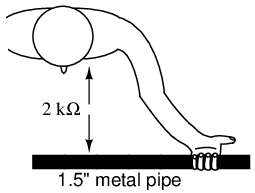

With this lesson, I hope to avoid a common mistake found in electronics textbooks of either ignoring or not covering with sufficient detail the subject of electrical safety. I assume that whoever reads this book has at least a passing interest in actually working with electricity, and as such the topic of safety is of paramount importance. Those authors, editors, and publishers who fail to incorporate this subject into their introductory texts are depriving the reader of life-saving information.
As an instructor of industrial electronics, I spend a full week with my students reviewing the theoretical and practical aspects of electrical safety. The same textbooks I found lacking in technical clarity I also found lacking in coverage of electrical safety, hence the creation of this chapter. Its placement after the first two chapters is intentional: in order for the concepts of electrical safety to make the most sense, some foundational knowledge of electricity is necessary.
Another benefit of including a detailed lesson on electrical safety is the practical context it sets for basic concepts of voltage, current, resistance, and circuit design. The more relevant a technical topic can be made, the more likely a student will be to pay attention and comprehend. And what could be more relevant than application to your own personal safety? Also, with electrical power being such an everyday presence in modern life, almost anyone can relate to the illustrations given in such a lesson. Have you ever wondered why birds don't get shocked while resting on power lines? Read on and find out!
Most of us have experienced some form of electric "shock," where electricity causes our body to experience pain or trauma. If we are fortunate, the extent of that experience is limited to tingles or jolts of pain from static electricity buildup discharging through our bodies. When we are working around electric circuits capable of delivering high power to loads, electric shock becomes a much more serious issue, and pain is the least significant result of shock.
As electric current is conducted through a material, any opposition to that flow of electrons (resistance) results in a dissipation of energy, usually in the form of heat. This is the most basic and easy-to-understand effect of electricity on living tissue: current makes it heat up. If the amount of heat generated is sufficient, the tissue may be burnt. The effect is physiologically the same as damage caused by an open flame or other high-temperature source of heat, except that electricity has the ability to burn tissue well beneath the skin of a victim, even burning internal organs.
Another effect of electric current on the body, perhaps the most significant in terms of hazard, regards the nervous system. By "nervous system" I mean the network of special cells in the body called "nerve cells" or "neurons" which process and conduct the multitude of signals responsible for regulation of many body functions. The brain, spinal cord, and sensory/motor organs in the body function together to allow it to sense, move, respond, think, and remember.
Nerve cells communicate to each other by acting as "transducers:" creating electrical signals (very small voltages and currents) in response to the input of certain chemical compounds called neurotransmitters, and releasing neurotransmitters when stimulated by electrical signals. If electric current of sufficient magnitude is conducted through a living creature (human or otherwise), its effect will be to override the tiny electrical impulses normally generated by the neurons, overloading the nervous system and preventing both reflex and volitional signals from being able to actuate muscles. Muscles triggered by an external (shock) current will involuntarily contract, and there's nothing the victim can do about it.
This problem is especially dangerous if the victim contacts an energized conductor with his or her hands. The forearm muscles responsible for bending fingers tend to be better developed than those muscles responsible for extending fingers, and so if both sets of muscles try to contract because of an electric current conducted through the person's arm, the "bending" muscles will win, clenching the fingers into a fist. If the conductor delivering current to the victim faces the palm of his or her hand, this clenching action will force the hand to grasp the wire firmly, thus worsening the situation by securing excellent contact with the wire. The victim will be completely unable to let go of the wire.
Medically, this condition of involuntary muscle contraction is called tetanus. Electricians familiar with this effect of electric shock often refer to an immobilized victim of electric shock as being "froze on the circuit." Shock-induced tetanus can only be interrupted by stopping the current through the victim.
Even when the current is stopped, the victim may not regain voluntary control over their muscles for a while, as the neurotransmitter chemistry has been thrown into disarray. This principle has been applied in "stun gun" devices such as Tasers, which on the principle of momentarily shocking a victim with a high-voltage pulse delivered between two electrodes. A well-placed shock has the effect of temporarily (a few minutes) immobilizing the victim.
Electric current is able to affect more than just skeletal muscles in a shock victim, however. The diaphragm muscle controlling the lungs, and the heart -- which is a muscle in itself -- can also be "frozen" in a state of tetanus by electric current. Even currents too low to induce tetanus are often able to scramble nerve cell signals enough that the heart cannot beat properly, sending the heart into a condition known as fibrillation. A fibrillating heart flutters rather than beats, and is ineffective at pumping blood to vital organs in the body. In any case, death from asphyxiation and/or cardiac arrest will surely result from a strong enough electric current through the body. Ironically, medical personnel use a strong jolt of electric current applied across the chest of a victim to "jump start" a fibrillating heart into a normal beating pattern.
That last detail leads us into another hazard of electric shock, this one peculiar to public power systems. Though our initial study of electric circuits will focus almost exclusively on DC (Direct Current, or electricity that moves in a continuous direction in a circuit), modern power systems utilize alternating current, or AC. The technical reasons for this preference of AC over DC in power systems are irrelevant to this discussion, but the special hazards of each kind of electrical power are very important to the topic of safety.
How AC affects the body depends largely on frequency. Low-frequency (50- to 60-Hz) AC is used in US (60 Hz) and European (50 Hz) households; it can be more dangerous than high-frequency AC and is 3 to 5 times more dangerous than DC of the same voltage and amperage. Low-frequency AC produces extended muscle contraction (tetany), which may freeze the hand to the current's source, prolonging exposure. DC is most likely to cause a single convulsive contraction, which often forces the victim away from the current's source. [MMOM]
AC's alternating nature has a greater tendency to throw the heart's pacemaker neurons into a condition of fibrillation, whereas DC tends to just make the heart stand still. Once the shock current is halted, a "frozen" heart has a better chance of regaining a normal beat pattern than a fibrillating heart. This is why "defibrillating" equipment used by emergency medics works: the jolt of current supplied by the defibrillator unit is DC, which halts fibrillation and gives the heart a chance to recover.
In either case, electric currents high enough to cause involuntary muscle action are dangerous and are to be avoided at all costs. In the next section, we'll take a look at how such currents typically enter and exit the body, and examine precautions against such occurrences.
As we've already learned, electricity requires a complete path (circuit) to continuously flow. This is why the shock received from static electricity is only a momentary jolt: the flow of electrons is necessarily brief when static charges are equalized between two objects. Shocks of self-limited duration like this are rarely hazardous.
Without two contact points on the body for current to enter and exit, respectively, there is no hazard of shock. This is why birds can safely rest on high-voltage power lines without getting shocked: they make contact with the circuit at only one point.
In order for electrons to flow through a conductor, there must be a voltage present to motivate them. Voltage, as you should recall, is always relative between two points. There is no such thing as voltage "on" or "at" a single point in the circuit, and so the bird contacting a single point in the above circuit has no voltage applied across its body to establish a current through it. Yes, even though they rest on two feet, both feet are touching the same wire, making them electrically common. Electrically speaking, both of the bird's feet touch the same point, hence there is no voltage between them to motivate current through the bird's body.
This might lend one to believe that its impossible to be shocked by electricity by only touching a single wire. Like the birds, if we're sure to touch only one wire at a time, we'll be safe, right? Unfortunately, this is not correct. Unlike birds, people are usually standing on the ground when they contact a "live" wire. Many times, one side of a power system will be intentionally connected to earth ground, and so the person touching a single wire is actually making contact between two points in the circuit (the wire and earth ground):
The ground symbol is that set of three horizontal bars of decreasing width located at the lower-left of the circuit shown, and also at the foot of the person being shocked. In real life the power system ground consists of some kind of metallic conductor buried deep in the ground for making maximum contact with the earth. That conductor is electrically connected to an appropriate connection point on the circuit with thick wire. The victim's ground connection is through their feet, which are touching the earth.
A few questions usually arise at this point in the mind of the student:
In answer to the first question, the presence of an intentional "grounding" point in an electric circuit is intended to ensure that one side of it is safe to come in contact with. Note that if our victim in the above diagram were to touch the bottom side of the resistor, nothing would happen even though their feet would still be contacting ground:
Because the bottom side of the circuit is firmly connected to ground through the grounding point on the lower-left of the circuit, the lower conductor of the circuit is made electrically common with earth ground. Since there can be no voltage between electrically common points, there will be no voltage applied across the person contacting the lower wire, and they will not receive a shock. For the same reason, the wire connecting the circuit to the grounding rod/plates is usually left bare (no insulation), so that any metal object it brushes up against will similarly be electrically common with the earth.
Circuit grounding ensures that at least one point in the circuit will be safe to touch. But what about leaving a circuit completely ungrounded? Wouldn't that make any person touching just a single wire as safe as the bird sitting on just one? Ideally, yes. Practically, no. Observe what happens with no ground at all:
Despite the fact that the person's feet are still contacting ground, any single point in the circuit should be safe to touch. Since there is no complete path (circuit) formed through the person's body from the bottom side of the voltage source to the top, there is no way for a current to be established through the person. However, this could all change with an accidental ground, such as a tree branch touching a power line and providing connection to earth ground:
Such an accidental connection between a power system conductor and the earth (ground) is called a ground fault. Ground faults may be caused by many things, including dirt buildup on power line insulators (creating a dirty-water path for current from the conductor to the pole, and to the ground, when it rains), ground water infiltration in buried power line conductors, and birds landing on power lines, bridging the line to the pole with their wings. Given the many causes of ground faults, they tend to be unpredicatable. In the case of trees, no one can guarantee which wire their branches might touch. If a tree were to brush up against the top wire in the circuit, it would make the top wire safe to touch and the bottom one dangerous -- just the opposite of the previous scenario where the tree contacts the bottom wire:
With a tree branch contacting the top wire, that wire becomes the grounded conductor in the circuit, electrically common with earth ground. Therefore, there is no voltage between that wire and ground, but full (high) voltage between the bottom wire and ground. As mentioned previously, tree branches are only one potential source of ground faults in a power system. Consider an ungrounded power system with no trees in contact, but this time with two people touching single wires:
With each person standing on the ground, contacting different points in the circuit, a path for shock current is made through one person, through the earth, and through the other person. Even though each person thinks they're safe in only touching a single point in the circuit, their combined actions create a deadly scenario. In effect, one person acts as the ground fault which makes it unsafe for the other person. This is exactly why ungrounded power systems are dangerous: the voltage between any point in the circuit and ground (earth) is unpredictable, because a ground fault could appear at any point in the circuit at any time. The only character guaranteed to be safe in these scenarios is the bird, who has no connection to earth ground at all! By firmly connecting a designated point in the circuit to earth ground ("grounding" the circuit), at least safety can be assured at that one point. This is more assurance of safety than having no ground connection at all.
In answer to the second question, rubber-soled shoes do indeed provide some electrical insulation to help protect someone from conducting shock current through their feet. However, most common shoe designs are not intended to be electrically "safe," their soles being too thin and not of the right substance. Also, any moisture, dirt, or conductive salts from body sweat on the surface of or permeated through the soles of shoes will compromise what little insulating value the shoe had to begin with. There are shoes specifically made for dangerous electrical work, as well as thick rubber mats made to stand on while working on live circuits, but these special pieces of gear must be in absolutely clean, dry condition in order to be effective. Suffice it to say, normal footwear is not enough to guarantee protection against electric shock from a power system.
Research conducted on contact resistance between parts of the human body and points of contact (such as the ground) shows a wide range of figures (see end of chapter for information on the source of this data):
As you can see, not only is rubber a far better insulating material than leather, but the presence of water in a porous substance such as leather greatly reduces electrical resistance.
In answer to the third question, dirt is not a very good conductor (at least not when its dry!). It is too poor of a conductor to support continuous current for powering a load. However, as we will see in the next section, it takes very little current to injure or kill a human being, so even the poor conductivity of dirt is enough to provide a path for deadly current when there is sufficient voltage available, as there usually is in power systems.
Some ground surfaces are better insulators than others. Asphalt, for instance, being oil-based, has a much greater resistance than most forms of dirt or rock. Concrete, on the other hand, tends to have fairly low resistance due to its intrinsic water and electrolyte (conductive chemical) content.
A common phrase heard in reference to electrical safety goes something like this: "It's not voltage that kills, its current!" While there is an element of truth to this, there's more to understand about shock hazard than this simple adage. If voltage presented no danger, no one would ever print and display signs saying: DANGER -- HIGH VOLTAGE!
The principle that "current kills" is essentially correct. It is electric current that burns tissue, freezes muscles, and fibrillates hearts. However, electric current doesn't just occur on its own: there must be voltage available to motivate electrons to flow through a victim. A person's body also presents resistance to current, which must be taken into account.
Taking Ohm's Law for voltage, current, and resistance, and expressing it in terms of current for a given voltage and resistance, we have this equation:
The amount of current through a body is equal to the amount of voltage applied between two points on that body, divided by the electrical resistance offered by the body between those two points. Obviously, the more voltage available to cause electrons to flow, the easier they will flow through any given amount of resistance. Hence, the danger of high voltage: high voltage means potential for large amounts of current through your body, which will injure or kill you. Conversely, the more resistance a body offers to current, the slower electrons will flow for any given amount of voltage. Just how much voltage is dangerous depends on how much total resistance is in the circuit to oppose the flow of electrons.
Body resistance is not a fixed quantity. It varies from person to person and from time to time. There's even a body fat measurement technique based on a measurement of electrical resistance between a person's toes and fingers. Differing percentages of body fat give different resistances: just one variable affecting electrical resistance in the human body. In order for the technique to work accurately, the person must regulate their fluid intake for several hours prior to the test, indicating that body hydration is another factor impacting the body's electrical resistance.
Body resistance also varies depending on how contact is made with the skin: is it from hand-to-hand, hand-to-foot, foot-to-foot, hand-to-elbow, etc.? Sweat, being rich in salts and minerals, is an excellent conductor of electricity for being a liquid. So is blood, with its similarly high content of conductive chemicals. Thus, contact with a wire made by a sweaty hand or open wound will offer much less resistance to current than contact made by clean, dry skin.
Measuring electrical resistance with a sensitive meter, I measure approximately 1 million ohms of resistance (1 MΩ) between my two hands, holding on to the meter's metal probes between my fingers. The meter indicates less resistance when I squeeze the probes tightly and more resistance when I hold them loosely. Sitting here at my computer, typing these words, my hands are clean and dry. If I were working in some hot, dirty, industrial environment, the resistance between my hands would likely be much less, presenting less opposition to deadly current, and a greater threat of electrical shock.
But how much current is harmful? The answer to that question also depends on several factors. Individual body chemistry has a significant impact on how electric current affects an individual. Some people are highly sensitive to current, experiencing involuntary muscle contraction with shocks from static electricity. Others can draw large sparks from discharging static electricity and hardly feel it, much less experience a muscle spasm. Despite these differences, approximate guidelines have been developed through tests which indicate very little current being necessary to manifest harmful effects (again, see end of chapter for information on the source of this data). All current figures given in milliamps (a milliamp is equal to 1/1000 of an amp):
BODILY EFFECT DIRECT CURRENT (DC) 60 Hz AC 10 kHz AC --------------------------------------------------------------- Slight sensation Men = 1.0 mA 0.4 mA 7 mA felt at hand(s) Women = 0.6 mA 0.3 mA 5 mA --------------------------------------------------------------- Threshold of Men = 5.2 mA 1.1 mA 12 mA perception Women = 3.5 mA 0.7 mA 8 mA --------------------------------------------------------------- Painful, but Men = 62 mA 9 mA 55 mA voluntary muscle Women = 41 mA 6 mA 37 mA control maintained --------------------------------------------------------------- Painful, unable Men = 76 mA 16 mA 75 mA to let go of wires Women = 51 mA 10.5 mA 50 mA --------------------------------------------------------------- Severe pain, Men = 90 mA 23 mA 94 mA difficulty Women = 60 mA 15 mA 63 mA breathing --------------------------------------------------------------- Possible heart Men = 500 mA 100 mA fibrillation Women = 500 mA 100 mA after 3 seconds ---------------------------------------------------------------
"Hz" stands for the unit of Hertz, the measure of how rapidly alternating current alternates, a measure otherwise known as frequency. So, the column of figures labeled "60 Hz AC" refers to current that alternates at a frequency of 60 cycles (1 cycle = period of time where electrons flow one direction, then the other direction) per second. The last column, labeled "10 kHz AC," refers to alternating current that completes ten thousand (10,000) back-and-forth cycles each and every second.
Keep in mind that these figures are only approximate, as individuals with different body chemistry may react differently. It has been suggested that an across-the-chest current of only 17 milliamps AC is enough to induce fibrillation in a human subject under certain conditions. Most of our data regarding induced fibrillation comes from animal testing. Obviously, it is not practical to perform tests of induced ventricular fibrillation on human subjects, so the available data is sketchy. Oh, and in case you're wondering, I have no idea why women tend to be more susceptible to electric currents than men!
Suppose I were to place my two hands across the terminals of an AC voltage source at 60 Hz (60 cycles, or alternations back-and-forth, per second). How much voltage would be necessary in this clean, dry state of skin condition to produce a current of 20 milliamps (enough to cause me to become unable to let go of the voltage source)? We can use Ohm's Law (E=IR) to determine this:
E = IR
E = (20 mA)(1 MΩ)
E = 20,000 volts, or 20 kV
Bear in mind that this is a "best case" scenario (clean, dry skin) from the standpoint of electrical safety, and that this figure for voltage represents the amount necessary to induce tetanus. Far less would be required to cause a painful shock! Also keep in mind that the physiological effects of any particular amount of current can vary significantly from person to person, and that these calculations are rough estimates only.
With water sprinkled on my fingers to simulate sweat, I was able to measure a hand-to-hand resistance of only 17,000 ohms (17 kΩ). Bear in mind this is only with one finger of each hand contacting a thin metal wire. Recalculating the voltage required to cause a current of 20 milliamps, we obtain this figure:
E = IR
E = (20 mA)(17 kΩ)
E = 340 volts
In this realistic condition, it would only take 340 volts of potential from one of my hands to the other to cause 20 milliamps of current. However, it is still possible to receive a deadly shock from less voltage than this. Provided a much lower body resistance figure augmented by contact with a ring (a band of gold wrapped around the circumference of one's finger makes an excellent contact point for electrical shock) or full contact with a large metal object such as a pipe or metal handle of a tool, the body resistance figure could drop as low as 1,000 ohms (1 kΩ), allowing an even lower voltage to present a potential hazard:
E = IR
E = (20 mA)(1 kΩ)
E = 20 volts
Notice that in this condition, 20 volts is enough to produce a current of 20 milliamps through a person: enough to induce tetanus. Remember, it has been suggested a current of only 17 milliamps may induce ventricular (heart) fibrillation. With a hand-to-hand resistance of 1000 Ω, it would only take 17 volts to create this dangerous condition:
E = IR
E = (17 mA)(1 kΩ)
E = 17 volts
Seventeen volts is not very much as far as electrical systems are concerned. Granted, this is a "worst-case" scenario with 60 Hz AC voltage and excellent bodily conductivity, but it does stand to show how little voltage may present a serious threat under certain conditions.
The conditions necessary to produce 1,000 Ω of body resistance don't have to be as extreme as what was presented, either (sweaty skin with contact made on a gold ring). Body resistance may decrease with the application of voltage (especially if tetanus causes the victim to maintain a tighter grip on a conductor) so that with constant voltage a shock may increase in severity after initial contact. What begins as a mild shock -- just enough to "freeze" a victim so they can't let go -- may escalate into something severe enough to kill them as their body resistance decreases and current correspondingly increases.
Research has provided an approximate set of figures for electrical resistance of human contact points under different conditions (see end of chapter for information on the source of this data):
Note the resistance values of the two conditions involving a 1.5 inch metal pipe. The resistance measured with two hands grasping the pipe is exactly one-half the resistance of one hand grasping the pipe.

With two hands, the bodily contact area is twice as great as with one hand. This is an important lesson to learn: electrical resistance between any contacting objects diminishes with increased contact area, all other factors being equal. With two hands holding the pipe, electrons have two, parallel routes through which to flow from the pipe to the body (or vice-versa).
As we will see in a later chapter, parallel circuit pathways always result in less overall resistance than any single pathway considered alone.
In industry, 30 volts is generally considered to be a conservative threshold value for dangerous voltage. The cautious person should regard any voltage above 30 volts as threatening, not relying on normal body resistance for protection against shock. That being said, it is still an excellent idea to keep one's hands clean and dry, and remove all metal jewelry when working around electricity. Even around lower voltages, metal jewelry can present a hazard by conducting enough current to burn the skin if brought into contact between two points in a circuit. Metal rings, especially, have been the cause of more than a few burnt fingers by bridging between points in a low-voltage, high-current circuit.
Also, voltages lower than 30 can be dangerous if they are enough to induce an unpleasant sensation, which may cause you to jerk and accidently come into contact across a higher voltage or some other hazard. I recall once working on a automobile on a hot summer day. I was wearing shorts, my bare leg contacting the chrome bumper of the vehicle as I tightened battery connections. When I touched my metal wrench to the positive (ungrounded) side of the 12 volt battery, I could feel a tingling sensation at the point where my leg was touching the bumper. The combination of firm contact with metal and my sweaty skin made it possible to feel a shock with only 12 volts of electrical potential.
Thankfully, nothing bad happened, but had the engine been running and the shock felt at my hand instead of my leg, I might have reflexively jerked my arm into the path of the rotating fan, or dropped the metal wrench across the battery terminals (producing large amounts of current through the wrench with lots of accompanying sparks). This illustrates another important lesson regarding electrical safety; that electric current itself may be an indirect cause of injury by causing you to jump or spasm parts of your body into harm's way.
The path current takes through the human body makes a difference as to how harmful it is. Current will affect whatever muscles are in its path, and since the heart and lung (diaphragm) muscles are probably the most critical to one's survival, shock paths traversing the chest are the most dangerous. This makes the hand-to-hand shock current path a very likely mode of injury and fatality.
To guard against such an occurrence, it is advisable to only use one hand to work on live circuits of hazardous voltage, keeping the other hand tucked into a pocket so as to not accidently touch anything. Of course, it is always safer to work on a circuit when it is unpowered, but this is not always practical or possible. For one-handed work, the right hand is generally preferred over the left for two reasons: most people are right-handed (thus granting additional coordination when working), and the heart is usually situated to the left of center in the chest cavity.
For those who are left-handed, this advice may not be the best. If such a person is sufficiently uncoordinated with their right hand, they may be placing themselves in greater danger by using the hand they're least comfortable with, even if shock current through that hand might present more of a hazard to their heart. The relative hazard between shock through one hand or the other is probably less than the hazard of working with less than optimal coordination, so the choice of which hand to work with is best left to the individual.
The best protection against shock from a live circuit is resistance, and resistance can be added to the body through the use of insulated tools, gloves, boots, and other gear. Current in a circuit is a function of available voltage divided by the total resistance in the path of the flow. As we will investigate in greater detail later in this book, resistances have an additive effect when they're stacked up so that there's only one path for electrons to flow:
Now we'll see an equivalent circuit for a person wearing insulated gloves and boots:
Because electric current must pass through the boot and the body and the glove to complete its circuit back to the battery, the combined total (sum) of these resistances opposes the flow of electrons to a greater degree than any of the resistances considered individually.
Safety is one of the reasons electrical wires are usually covered with plastic or rubber insulation: to vastly increase the amount of resistance between the conductor and whoever or whatever might contact it. Unfortunately, it would be prohibitively expensive to enclose power line conductors in sufficient insulation to provide safety in case of accidental contact, so safety is maintained by keeping those lines far enough out of reach so that no one can accidently touch them.
If at all possible, shut off the power to a circuit before performing any work on it. You must secure all sources of harmful energy before a system may be considered safe to work on. In industry, securing a circuit, device, or system in this condition is commonly known as placing it in a Zero Energy State. The focus of this lesson is, of course, electrical safety. However, many of these principles apply to non-electrical systems as well.
Securing something in a Zero Energy State means ridding it of any sort of potential or stored energy, including but not limited to:
Voltage by its very nature is a manifestation of potential energy. In the first chapter I even used elevated liquid as an analogy for the potential energy of voltage, having the capacity (potential) to produce current (flow), but not necessarily realizing that potential until a suitable path for flow has been established, and resistance to flow is overcome. A pair of wires with high voltage between them do not look or sound dangerous even though they harbor enough potential energy between them to push deadly amounts of current through your body. Even though that voltage isn't presently doing anything, it has the potential to, and that potential must be neutralized before it is safe to physically contact those wires.
All properly designed circuits have "disconnect" switch mechanisms for securing voltage from a circuit. Sometimes these "disconnects" serve a dual purpose of automatically opening under excessive current conditions, in which case we call them "circuit breakers." Other times, the disconnecting switches are strictly manually-operated devices with no automatic function. In either case, they are there for your protection and must be used properly. Please note that the disconnect device should be separate from the regular switch used to turn the device on and off. It is a safety switch, to be used only for securing the system in a Zero Energy State:
With the disconnect switch in the "open" position as shown (no continuity), the circuit is broken and no current will exist. There will be zero voltage across the load, and the full voltage of the source will be dropped across the open contacts of the disconnect switch. Note how there is no need for a disconnect switch in the lower conductor of the circuit. Because that side of the circuit is firmly connected to the earth (ground), it is electrically common with the earth and is best left that way. For maximum safety of personnel working on the load of this circuit, a temporary ground connection could be established on the top side of the load, to ensure that no voltage could ever be dropped across the load:
With the temporary ground connection in place, both sides of the load wiring are connected to ground, securing a Zero Energy State at the load.
Since a ground connection made on both sides of the load is electrically equivalent to short-circuiting across the load with a wire, that is another way of accomplishing the same goal of maximum safety:
Either way, both sides of the load will be electrically common to the earth, allowing for no voltage (potential energy) between either side of the load and the ground people stand on. This technique of temporarily grounding conductors in a de-energized power system is very common in maintenance work performed on high voltage power distribution systems.
A further benefit of this precaution is protection against the possibility of the disconnect switch being closed (turned "on" so that circuit continuity is established) while people are still contacting the load. The temporary wire connected across the load would create a short-circuit when the disconnect switch was closed, immediately tripping any overcurrent protection devices (circuit breakers or fuses) in the circuit, which would shut the power off again. Damage may very well be sustained by the disconnect switch if this were to happen, but the workers at the load are kept safe.
It would be good to mention at this point that overcurrent devices are not intended to provide protection against electric shock. Rather, they exist solely to protect conductors from overheating due to excessive currents. The temporary shorting wires just described would indeed cause any overcurrent devices in the circuit to "trip" if the disconnect switch were to be closed, but realize that electric shock protection is not the intended function of those devices. Their primary function would merely be leveraged for the purpose of worker protection with the shorting wire in place.
Since it is obviously important to be able to secure any disconnecting devices in the open (off) position and make sure they stay that way while work is being done on the circuit, there is need for a structured safety system to be put into place. Such a system is commonly used in industry and it is called Lock-out/Tag-out.
A lock-out/tag-out procedure works like this: all individuals working on a secured circuit have their own personal padlock or combination lock which they set on the control lever of a disconnect device prior to working on the system. Additionally, they must fill out and sign a tag which they hang from their lock describing the nature and duration of the work they intend to perform on the system. If there are multiple sources of energy to be "locked out" (multiple disconnects, both electrical and mechanical energy sources to be secured, etc.), the worker must use as many of his or her locks as necessary to secure power from the system before work begins. This way, the system is maintained in a Zero Energy State until every last lock is removed from all the disconnect and shutoff devices, and that means every last worker gives consent by removing their own personal locks. If the decision is made to re-energize the system and one person's lock(s) still remain in place after everyone present removes theirs, the tag(s) will show who that person is and what it is they're doing.
Even with a good lock-out/tag-out safety program in place, there is still need for diligence and common-sense precaution. This is especially true in industrial settings where a multitude of people may be working on a device or system at once. Some of those people might not know about proper lock-out/tag-out procedure, or might know about it but are too complacent to follow it. Don't assume that everyone has followed the safety rules!
After an electrical system has been locked out and tagged with your own personal lock, you must then double-check to see if the voltage really has been secured in a zero state. One way to check is to see if the machine (or whatever it is that's being worked on) will start up if the Start switch or button is actuated. If it starts, then you know you haven't successfully secured the electrical power from it.
Additionally, you should always check for the presence of dangerous voltage with a measuring device before actually touching any conductors in the circuit. To be safest, you should follow this procedure of checking, using, and then checking your meter:
While this may seem excessive or even paranoid, it is a proven technique for preventing electrical shock. I once had a meter fail to indicate voltage when it should have while checking a circuit to see if it was "dead." Had I not used other means to check for the presence of voltage, I might not be alive today to write this. There's always the chance that your voltage meter will be defective just when you need it to check for a dangerous condition. Following these steps will help ensure that you're never misled into a deadly situation by a broken meter.
Finally, the electrical worker will arrive at a point in the safety check procedure where it is deemed safe to actually touch the conductor(s). Bear in mind that after all of the precautionary steps have taken, it is still possible (although very unlikely) that a dangerous voltage may be present. One final precautionary measure to take at this point is to make momentary contact with the conductor(s) with the back of the hand before grasping it or a metal tool in contact with it. Why? If, for some reason there is still voltage present between that conductor and earth ground, finger motion from the shock reaction (clenching into a fist) will break contact with the conductor. Please note that this is absolutely the last step that any electrical worker should ever take before beginning work on a power system, and should never be used as an alternative method of checking for dangerous voltage. If you ever have reason to doubt the trustworthiness of your meter, use another meter to obtain a "second opinion."
Despite lock-out/tag-out procedures and multiple repetitions of electrical safety rules in industry, accidents still do occur. The vast majority of the time, these accidents are the result of not following proper safety procedures. But however they may occur, they still do happen, and anyone working around electrical systems should be aware of what needs to be done for a victim of electrical shock.
If you see someone lying unconscious or "froze on the circuit," the very first thing to do is shut off the power by opening the appropriate disconnect switch or circuit breaker. If someone touches another person being shocked, there may be enough voltage dropped across the body of the victim to shock the would-be rescuer, thereby "freezing" two people instead of one. Don't be a hero. Electrons don't respect heroism. Make sure the situation is safe for you to step into, or else you will be the next victim, and nobody will benefit from your efforts.
One problem with this rule is that the source of power may not be known, or easily found in time to save the victim of shock. If a shock victim's breathing and heartbeat are paralyzed by electric current, their survival time is very limited. If the shock current is of sufficient magnitude, their flesh and internal organs may be quickly roasted by the power the current dissipates as it runs through their body.
If the power disconnect switch cannot be located quickly enough, it may be possible to dislodge the victim from the circuit they're frozen on to by prying them or hitting them away with a dry wooden board or piece of nonmetallic conduit, common items to be found in industrial construction scenes. Another item that could be used to safely drag a "frozen" victim away from contact with power is an extension cord. By looping a cord around their torso and using it as a rope to pull them away from the circuit, their grip on the conductor(s) may be broken. Bear in mind that the victim will be holding on to the conductor with all their strength, so pulling them away probably won't be easy!
Once the victim has been safely disconnected from the source of electric power, the immediate medical concerns for the victim should be respiration and circulation (breathing and pulse). If the rescuer is trained in CPR, they should follow the appropriate steps of checking for breathing and pulse, then applying CPR as necessary to keep the victim's body from deoxygenating. The cardinal rule of CPR is to keep going until you have been relieved by qualified personnel.
If the victim is conscious, it is best to have them lie still until qualified emergency response personnel arrive on the scene. There is the possibility of the victim going into a state of physiological shock -- a condition of insufficient blood circulation different from electrical shock -- and so they should be kept as warm and comfortable as possible. An electrical shock insufficient to cause immediate interruption of the heartbeat may be strong enough to cause heart irregularities or a heart attack up to several hours later, so the victim should pay close attention to their own condition after the incident, ideally under supervision.
Of course there is danger of electrical shock when directly performing manual work on an electrical power system. However, electric shock hazards exist in many other places, thanks to the widespread use of electric power in our lives.
As we saw earlier, skin and body resistance has a lot to do with the relative hazard of electric circuits. The higher the body's resistance, the less likely harmful current will result from any given amount of voltage. Conversely, the lower the body's resistance, the more likely for injury to occur from the application of a voltage.
The easiest way to decrease skin resistance is to get it wet. Therefore, touching electrical devices with wet hands, wet feet, or especially in a sweaty condition (salt water is a much better conductor of electricity than fresh water) is dangerous. In the household, the bathroom is one of the more likely places where wet people may contact electrical appliances, and so shock hazard is a definite threat there. Good bathroom design will locate power receptacles away from bathtubs, showers, and sinks to discourage the use of appliances nearby. Telephones that plug into a wall socket are also sources of hazardous voltage (the open circuit voltage is 48 volts DC, and the ringing signal is 150 volts AC -- remember that any voltage over 30 is considered potentially dangerous!). Appliances such as telephones and radios should never, ever be used while sitting in a bathtub. Even battery-powered devices should be avoided. Some battery-operated devices employ voltage-increasing circuitry capable of generating lethal potentials.
Swimming pools are another source of trouble, since people often operate radios and other powered appliances nearby. The National Electrical Code requires that special shock-detecting receptacles called Ground-Fault Current Interrupting (GFI or GFCI) be installed in wet and outdoor areas to help prevent shock incidents. More on these devices in a later section of this chapter. These special devices have no doubt saved many lives, but they can be no substitute for common sense and diligent precaution. As with firearms, the best "safety" is an informed and conscientious operator.
Extension cords, so commonly used at home and in industry, are also sources of potential hazard. All cords should be regularly inspected for abrasion or cracking of insulation, and repaired immediately. One sure method of removing a damaged cord from service is to unplug it from the receptacle, then cut off that plug (the "male" plug) with a pair of side-cutting pliers to ensure that no one can use it until it is fixed. This is important on jobsites, where many people share the same equipment, and not all people there may be aware of the hazards.
Any power tool showing evidence of electrical problems should be immediately serviced as well. I've heard several horror stories of people who continue to work with hand tools that periodically shock them. Remember, electricity can kill, and the death it brings can be gruesome. Like extension cords, a bad power tool can be removed from service by unplugging it and cutting off the plug at the end of the cord.
Downed power lines are an obvious source of electric shock hazard and should be avoided at all costs. The voltages present between power lines or between a power line and earth ground are typically very high (2400 volts being one of the lowest voltages used in residential distribution systems). If a power line is broken and the metal conductor falls to the ground, the immediate result will usually be a tremendous amount of arcing (sparks produced), often enough to dislodge chunks of concrete or asphalt from the road surface, and reports rivaling that of a rifle or shotgun. To come into direct contact with a downed power line is almost sure to cause death, but other hazards exist which are not so obvious.
When a line touches the ground, current travels between that downed conductor and the nearest grounding point in the system, thus establishing a circuit:
The earth, being a conductor (if only a poor one), will conduct current between the downed line and the nearest system ground point, which will be some kind of conductor buried in the ground for good contact. Being that the earth is a much poorer conductor of electricity than the metal cables strung along the power poles, there will be substantial voltage dropped between the point of cable contact with the ground and the grounding conductor, and little voltage dropped along the length of the cabling (the following figures are very approximate):
If the distance between the two ground contact points (the downed cable and the system ground) is small, there will be substantial voltage dropped along short distances between the two points. Therefore, a person standing on the ground between those two points will be in danger of receiving an electric shock by intercepting a voltage between their two feet!
Again, these voltage figures are very approximate, but they serve to illustrate a potential hazard: that a person can become a victim of electric shock from a downed power line without even coming into contact with that line!
One practical precaution a person could take if they see a power line falling towards the ground is to only contact the ground at one point, either by running away (when you run, only one foot contacts the ground at any given time), or if there's nowhere to run, by standing on one foot. Obviously, if there's somewhere safer to run, running is the best option. By eliminating two points of contact with the ground, there will be no chance of applying deadly voltage across the body through both legs.
As we saw earlier, a power system with no secure connection to earth ground is unpredictable from a safety perspective: there's no way to guarantee how much or how little voltage will exist between any point in the circuit and earth ground. By grounding one side of the power system's voltage source, at least one point in the circuit can be assured to be electrically common with the earth and therefore present no shock hazard. In a simple two-wire electrical power system, the conductor connected to ground is called the neutral, and the other conductor is called the hot, also known as the live or the active:
As far as the voltage source and load are concerned, grounding makes no difference at all. It exists purely for the sake of personnel safety, by guaranteeing that at least one point in the circuit will be safe to touch (zero voltage to ground). The "Hot" side of the circuit, named for its potential for shock hazard, will be dangerous to touch unless voltage is secured by proper disconnection from the source (ideally, using a systematic lock-out/tag-out procedure).
This imbalance of hazard between the two conductors in a simple power circuit is important to understand. The following series of illustrations are based on common household wiring systems (using DC voltage sources rather than AC for simplicity).
If we take a look at a simple, household electrical appliance such as a toaster with a conductive metal case, we can see that there should be no shock hazard when it is operating properly. The wires conducting power to the toaster's heating element are insulated from touching the metal case (and each other) by rubber or plastic.
However, if one of the wires inside the toaster were to accidently come in contact with the metal case, the case will be made electrically common to the wire, and touching the case will be just as hazardous as touching the wire bare. Whether or not this presents a shock hazard depends on which wire accidentally touches:
If the "hot" wire contacts the case, it places the user of the toaster in danger. On the other hand, if the neutral wire contacts the case, there is no danger of shock:
To help ensure that the former failure is less likely than the latter, engineers try to design appliances in such a way as to minimize hot conductor contact with the case. Ideally, of course, you don't want either wire accidently coming in contact with the conductive case of the appliance, but there are usually ways to design the layout of the parts to make accidental contact less likely for one wire than for the other. However, this preventative measure is effective only if power plug polarity can be guaranteed. If the plug can be reversed, then the conductor more likely to contact the case might very well be the "hot" one:
Appliances designed this way usually come with "polarized" plugs, one prong of the plug being slightly narrower than the other. Power receptacles are also designed like this, one slot being narrower than the other. Consequently, the plug cannot be inserted "backwards," and conductor identity inside the appliance can be guaranteed. Remember that this has no effect whatsoever on the basic function of the appliance: its strictly for the sake of user safety.
Some engineers address the safety issue simply by making the outside case of the appliance nonconductive. Such appliances are called double-insulated, since the insulating case serves as a second layer of insulation above and beyond that of the conductors themselves. If a wire inside the appliance accidently comes in contact with the case, there is no danger presented to the user of the appliance.
Other engineers tackle the problem of safety by maintaining a conductive case, but using a third conductor to firmly connect that case to ground:
The third prong on the power cord provides a direct electrical connection from the appliance case to earth ground, making the two points electrically common with each other. If they're electrically common, then there cannot be any voltage dropped between them. At least, that's how it is supposed to work. If the hot conductor accidently touches the metal appliance case, it will create a direct short-circuit back to the voltage source through the ground wire, tripping any overcurrent protection devices. The user of the appliance will remain safe.
This is why its so important never to cut the third prong off a power plug when trying to fit it into a two-prong receptacle. If this is done, there will be no grounding of the appliance case to keep the user(s) safe. The appliance will still function properly, but if there is an internal fault bringing the hot wire in contact with the case, the results can be deadly. If a two-prong receptacle must be used, a two- to three-prong receptacle adapter can be installed with a grounding wire attached to the receptacle's grounded cover screw. This will maintain the safety of the grounded appliance while plugged in to this type of receptacle.
Electrically safe engineering doesn't necessarily end at the load, however. A final safeguard against electrical shock can be arranged on the power supply side of the circuit rather than the appliance itself. This safeguard is called ground-fault detection, and it works like this:
In a properly functioning appliance (shown above), the current measured through the hot conductor should be exactly equal to the current through the neutral conductor, because there's only one path for electrons to flow in the circuit. With no fault inside the appliance, there is no connection between circuit conductors and the person touching the case, and therefore no shock.
If, however, the hot wire accidently contacts the metal case, there will be current through the person touching the case. The presence of a shock current will be manifested as a difference of current between the two power conductors at the receptacle:
This difference in current between the "hot" and "neutral" conductors will only exist if there is current through the ground connection, meaning that there is a fault in the system. Therefore, such a current difference can be used as a way to detect a fault condition. If a device is set up to measure this difference of current between the two power conductors, a detection of current imbalance can be used to trigger the opening of a disconnect switch, thus cutting power off and preventing serious shock:
Such devices are called Ground Fault Current Interruptors, or GFCIs for short. Outside North America, the GFCI is variously known as a safety switch, a residual current device (RCD), an RCBO or RCD/MCB if combined with a miniature circuit breaker, or earth leakage circuit breaker (ELCB). They are compact enough to be built into a power receptacle. These receptacles are easily identified by their distinctive "Test" and "Reset" buttons. The big advantage with using this approach to ensure safety is that it works regardless of the appliance's design. Of course, using a double-insulated or grounded appliance in addition to a GFCI receptacle would be better yet, but its comforting to know that something can be done to improve safety above and beyond the design and condition of the appliance.
The arc fault circuit interrupter (AFCI), a circuit breaker designed to prevent fires, is designed to open on intermittent resistive short circuits. For example, a normal 15 A breaker is designed to open circuit quickly if loaded well beyond the 15 A rating, more slowly a little beyond the rating. While this protects against direct shorts and several seconds of overload, respectively, it does not protect against arcs– similar to arc-welding. An arc is a highly variable load, repetitively peaking at over 70 A, open circuiting with alternating current zero-crossings. Though, the average current is not enough to trip a standard breaker, it is enough to start a fire. This arc could be created by a metalic short circuit which burns the metal open, leaving a resistive sputtering plasma of ionized gases.
The AFCI contains electronic circuitry to sense this intermittent resistive short circuit. It protects against both hot to neutral and hot to ground arcs. The AFCI does not protect against personal shock hazards like a GFCI does. Thus, GFCIs still need to be installed in kitchen, bath, and outdoors circuits. Since the AFCI often trips upon starting large motors, and more generally on brushed motors, its installation is limited to bedroom circuits by the U.S. National Electrical code. Use of the AFCI should reduce the number of electrical fires. However, nuisance-trips when running appliances with motors on AFCI circuits is a problem.
Using an electrical meter safely and efficiently is perhaps the most valuable skill an electronics technician can master, both for the sake of their own personal safety and for proficiency at their trade. It can be daunting at first to use a meter, knowing that you are connecting it to live circuits which may harbor life-threatening levels of voltage and current. This concern is not unfounded, and it is always best to proceed cautiously when using meters. Carelessness more than any other factor is what causes experienced technicians to have electrical accidents.
The most common piece of electrical test equipment is a meter called the multimeter. Multimeters are so named because they have the ability to measure a multiple of variables: voltage, current, resistance, and often many others, some of which cannot be explained here due to their complexity. In the hands of a trained technician, the multimeter is both an efficient work tool and a safety device. In the hands of someone ignorant and/or careless, however, the multimeter may become a source of danger when connected to a "live" circuit.
There are many different brands of multimeters, with multiple models made by each manufacturer sporting different sets of features. The multimeter shown here in the following illustrations is a "generic" design, not specific to any manufacturer, but general enough to teach the basic principles of use:
You will notice that the display of this meter is of the "digital" type: showing numerical values using four digits in a manner similar to a digital clock. The rotary selector switch (now set in the Off position) has five different measurement positions it can be set in: two "V" settings, two "A" settings, and one setting in the middle with a funny-looking "horseshoe" symbol on it representing "resistance." The "horseshoe" symbol is the Greek letter "Omega" (Ω), which is the common symbol for the electrical unit of ohms.
Of the two "V" settings and two "A" settings, you will notice that each pair is divided into unique markers with either a pair of horizontal lines (one solid, one dashed), or a dashed line with a squiggly curve over it. The parallel lines represent "DC" while the squiggly curve represents "AC." The "V" of course stands for "voltage" while the "A" stands for "amperage" (current). The meter uses different techniques, internally, to measure DC than it uses to measure AC, and so it requires the user to select which type of voltage (V) or current (A) is to be measured. Although we haven't discussed alternating current (AC) in any technical detail, this distinction in meter settings is an important one to bear in mind.
There are three different sockets on the multimeter face into which we can plug our test leads. Test leads are nothing more than specially-prepared wires used to connect the meter to the circuit under test. The wires are coated in a color-coded (either black or red) flexible insulation to prevent the user's hands from contacting the bare conductors, and the tips of the probes are sharp, stiff pieces of wire:

The black test lead always plugs into the black socket on the multimeter: the one marked "COM" for "common." The red test lead plugs into either the red socket marked for voltage and resistance, or the red socket marked for current, depending on which quantity you intend to measure with the multimeter.
To see how this works, let's look at a couple of examples showing the meter in use. First, we'll set up the meter to measure DC voltage from a battery:
Note that the two test leads are plugged into the appropriate sockets on the meter for voltage, and the selector switch has been set for DC "V". Now, we'll take a look at an example of using the multimeter to measure AC voltage from a household electrical power receptacle (wall socket):
The only difference in the setup of the meter is the placement of the selector switch: it is now turned to AC "V". Since we're still measuring voltage, the test leads will remain plugged in the same sockets. In both of these examples, it is imperative that you not let the probe tips come in contact with one another while they are both in contact with their respective points on the circuit. If this happens, a short-circuit will be formed, creating a spark and perhaps even a ball of flame if the voltage source is capable of supplying enough current! The following image illustrates the potential for hazard:
This is just one of the ways that a meter can become a source of hazard if used improperly.
Voltage measurement is perhaps the most common function a multimeter is used for. It is certainly the primary measurement taken for safety purposes (part of the lock-out/tag-out procedure), and it should be well understood by the operator of the meter. Being that voltage is always relative between two points, the meter must be firmly connected to two points in a circuit before it will provide a reliable measurement. That usually means both probes must be grasped by the user's hands and held against the proper contact points of a voltage source or circuit while measuring.
Because a hand-to-hand shock current path is the most dangerous, holding the meter probes on two points in a high-voltage circuit in this manner is always a potential hazard. If the protective insulation on the probes is worn or cracked, it is possible for the user's fingers to come into contact with the probe conductors during the time of test, causing a bad shock to occur. If it is possible to use only one hand to grasp the probes, that is a safer option. Sometimes it is possible to "latch" one probe tip onto the circuit test point so that it can be let go of and the other probe set in place, using only one hand. Special probe tip accessories such as spring clips can be attached to help facilitate this.
Remember that meter test leads are part of the whole equipment package, and that they should be treated with the same care and respect that the meter itself is. If you need a special accessory for your test leads, such as a spring clip or other special probe tip, consult the product catalog of the meter manufacturer or other test equipment manufacturer. Do not try to be creative and make your own test probes, as you may end up placing yourself in danger the next time you use them on a live circuit.
Also, it must be remembered that digital multimeters usually do a good job of discriminating between AC and DC measurements, as they are set for one or the other when checking for voltage or current. As we have seen earlier, both AC and DC voltages and currents can be deadly, so when using a multimeter as a safety check device you should always check for the presence of both AC and DC, even if you're not expecting to find both! Also, when checking for the presence of hazardous voltage, you should be sure to check all pairs of points in question.
For example, suppose that you opened up an electrical wiring cabinet to find three large conductors supplying AC power to a load. The circuit breaker feeding these wires (supposedly) has been shut off, locked, and tagged. You double-checked the absence of power by pressing the Start button for the load. Nothing happened, so now you move on to the third phase of your safety check: the meter test for voltage.
First, you check your meter on a known source of voltage to see that its working properly. Any nearby power receptacle should provide a convenient source of AC voltage for a test. You do so and find that the meter indicates as it should. Next, you need to check for voltage among these three wires in the cabinet. But voltage is measured between two points, so where do you check?
The answer is to check between all combinations of those three points. As you can see, the points are labeled "A", "B", and "C" in the illustration, so you would need to take your multimeter (set in the voltmeter mode) and check between points A & B, B & C, and A & C. If you find voltage between any of those pairs, the circuit is not in a Zero Energy State. But wait! Remember that a multimeter will not register DC voltage when its in the AC voltage mode and vice versa, so you need to check those three pairs of points in each mode for a total of six voltage checks in order to be complete!
However, even with all that checking, we still haven't covered all possibilities yet. Remember that hazardous voltage can appear between a single wire and ground (in this case, the metal frame of the cabinet would be a good ground reference point) in a power system. So, to be perfectly safe, we not only have to check between A & B, B & C, and A & C (in both AC and DC modes), but we also have to check between A & ground, B & ground, and C & ground (in both AC and DC modes)! This makes for a grand total of twelve voltage checks for this seemingly simple scenario of only three wires. Then, of course, after we've completed all these checks, we need to take our multimeter and re-test it against a known source of voltage such as a power receptacle to ensure that its still in good working order.
Using a multimeter to check for resistance is a much simpler task. The test leads will be kept plugged in the same sockets as for the voltage checks, but the selector switch will need to be turned until it points to the "horseshoe" resistance symbol. Touching the probes across the device whose resistance is to be measured, the meter should properly display the resistance in ohms:

One very important thing to remember about measuring resistance is that it must only be done on de-energized components! When the meter is in "resistance" mode, it uses a small internal battery to generate a tiny current through the component to be measured. By sensing how difficult it is to move this current through the component, the resistance of that component can be determined and displayed. If there is any additional source of voltage in the meter-lead-component-lead-meter loop to either aid or oppose the resistance-measuring current produced by the meter, faulty readings will result. In a worse-case situation, the meter may even be damaged by the external voltage.
The "resistance" mode of a multimeter is very useful in determining wire continuity as well as making precise measurements of resistance. When there is a good, solid connection between the probe tips (simulated by touching them together), the meter shows almost zero Ω. If the test leads had no resistance in them, it would read exactly zero:
If the leads are not in contact with each other, or touching opposite ends of a broken wire, the meter will indicate infinite resistance (usually by displaying dashed lines or the abbreviation "O.L." which stands for "open loop"):
By far the most hazardous and complex application of the multimeter is in the measurement of current. The reason for this is quite simple: in order for the meter to measure current, the current to be measured must be forced to go through the meter. This means that the meter must be made part of the current path of the circuit rather than just be connected off to the side somewhere as is the case when measuring voltage. In order to make the meter part of the current path of the circuit, the original circuit must be "broken" and the meter connected across the two points of the open break. To set the meter up for this, the selector switch must point to either AC or DC "A" and the red test lead must be plugged in the red socket marked "A". The following illustration shows a meter all ready to measure current and a circuit to be tested:
Now, the circuit is broken in preparation for the meter to be connected:
The next step is to insert the meter in-line with the circuit by connecting the two probe tips to the broken ends of the circuit, the black probe to the negative (-) terminal of the 9-volt battery and the red probe to the loose wire end leading to the lamp:
This example shows a very safe circuit to work with. 9 volts hardly constitutes a shock hazard, and so there is little to fear in breaking this circuit open (bare handed, no less!) and connecting the meter in-line with the flow of electrons. However, with higher power circuits, this could be a hazardous endeavor indeed. Even if the circuit voltage was low, the normal current could be high enough that an injurious spark would result the moment the last meter probe connection was established.
Another potential hazard of using a multimeter in its current-measuring ("ammeter") mode is failure to properly put it back into a voltage-measuring configuration before measuring voltage with it. The reasons for this are specific to ammeter design and operation. When measuring circuit current by placing the meter directly in the path of current, it is best to have the meter offer little or no resistance against the flow of electrons. Otherwise, any additional resistance offered by the meter would impede the electron flow and alter the circuits operation. Thus, the multimeter is designed to have practically zero ohms of resistance between the test probe tips when the red probe has been plugged into the red "A" (current-measuring) socket. In the voltage-measuring mode (red lead plugged into the red "V" socket), there are many mega-ohms of resistance between the test probe tips, because voltmeters are designed to have close to infinite resistance (so that they don't draw any appreciable current from the circuit under test).
When switching a multimeter from current- to voltage-measuring mode, its easy to spin the selector switch from the "A" to the "V" position and forget to correspondingly switch the position of the red test lead plug from "A" to "V". The result -- if the meter is then connected across a source of substantial voltage -- will be a short-circuit through the meter!
To help prevent this, most multimeters have a warning feature by which they beep if ever there's a lead plugged in the "A" socket and the selector switch is set to "V". As convenient as features like these are, though, they are still no substitute for clear thinking and caution when using a multimeter.
All good-quality multimeters contain fuses inside that are engineered to "blow" in the event of excessive current through them, such as in the case illustrated in the last image. Like all overcurrent protection devices, these fuses are primarily designed to protect the equipment (in this case, the meter itself) from excessive damage, and only secondarily to protect the user from harm. A multimeter can be used to check its own current fuse by setting the selector switch to the resistance position and creating a connection between the two red sockets like this:
A good fuse will indicate very little resistance while a blown fuse will always show "O.L." (or whatever indication that model of multimeter uses to indicate no continuity). The actual number of ohms displayed for a good fuse is of little consequence, so long as its an arbitrarily low figure.
So now that we've seen how to use a multimeter to measure voltage, resistance, and current, what more is there to know? Plenty! The value and capabilities of this versatile test instrument will become more evident as you gain skill and familiarity using it. There is no substitute for regular practice with complex instruments such as these, so feel free to experiment on safe, battery-powered circuits.
The table of electric currents and their various bodily effects was obtained from online (Internet) sources: the safety page of Massachusetts Institute of Technology (website: [*]), and a safety handbook published by Cooper Bussmann, Inc (website: [*]). In the Bussmann handbook, the table is appropriately entitled Deleterious Effects of Electric Shock, and credited to a Mr. Charles F. Dalziel. Further research revealed Dalziel to be both a scientific pioneer and an authority on the effects of electricity on the human body.
The table found in the Bussmann handbook differs slightly from the one available from MIT: for the DC threshold of perception (men), the MIT table gives 5.2 mA while the Bussmann table gives a slightly greater figure of 6.2 mA. Also, for the "unable to let go" 60 Hz AC threshold (men), the MIT table gives 20 mA while the Bussmann table gives a lesser figure of 16 mA. As I have yet to obtain a primary copy of Dalziel's research, the figures cited here are conservative: I have listed the lowest values in my table where any data sources differ.
These differences, of course, are academic. The point here is that relatively small magnitudes of electric current through the body can be harmful if not lethal.
Data regarding the electrical resistance of body contact points was taken from a safety page (document 16.1) from the Lawrence Livermore National Laboratory (website [*]), citing Ralph H. Lee as the data source. Lee's work was listed here in a document entitled "Human Electrical Sheet," composed while he was an IEEE Fellow at E.I. duPont de Nemours & Co., and also in an article entitled "Electrical Safety in Industrial Plants" found in the June 1971 issue of IEEE Spectrum magazine.
For the morbidly curious, Charles Dalziel's experimentation conducted at the University of California (Berkeley) began with a state grant to investigate the bodily effects of sub-lethal electric current. His testing method was as follows: healthy male and female volunteer subjects were asked to hold a copper wire in one hand and place their other hand on a round, brass plate. A voltage was then applied between the wire and the plate, causing electrons to flow through the subject's arms and chest. The current was stopped, then resumed at a higher level. The goal here was to see how much current the subject could tolerate and still keep their hand pressed against the brass plate. When this threshold was reached, laboratory assistants forcefully held the subject's hand in contact with the plate and the current was again increased. The subject was asked to release the wire they were holding, to see at what current level involuntary muscle contraction (tetanus) prevented them from doing so. For each subject the experiment was conducted using DC and also AC at various frequencies. Over two dozen human volunteers were tested, and later studies on heart fibrillation were conducted using animal subjects.
Contributors to this chapter are listed in chronological order of their contributions, from most recent to first. See Appendix 2 (Contributor List) for dates and contact information.
Jason Starck (June 2000): HTML document formatting, which led to a much better-looking second edition.
Lessons In Electric Circuits copyright (C) 2000-2023 Tony R. Kuphaldt, under the terms and conditions of the CC BY License.